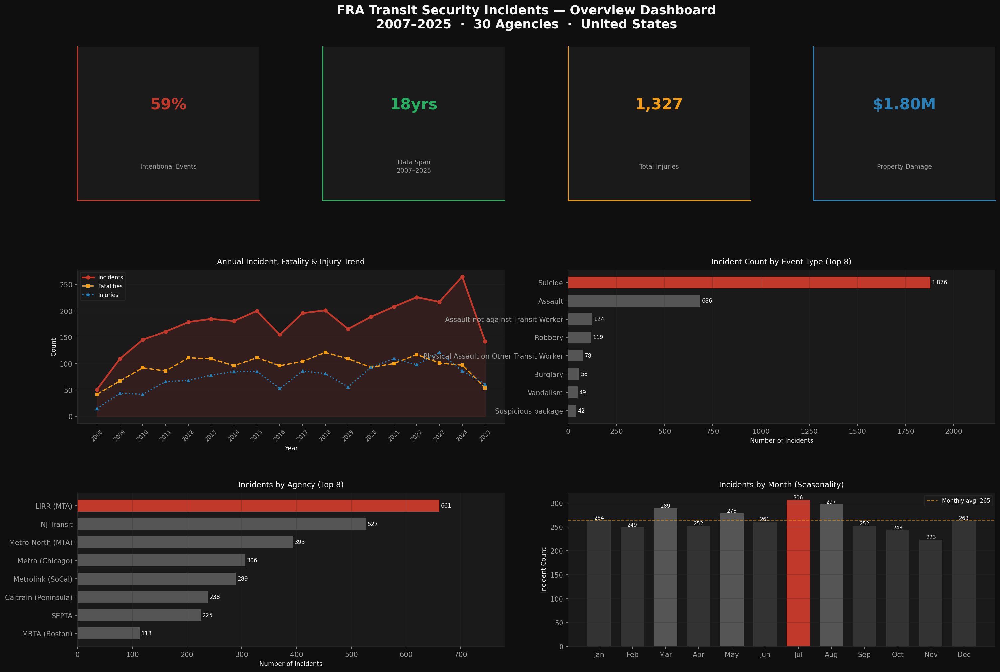
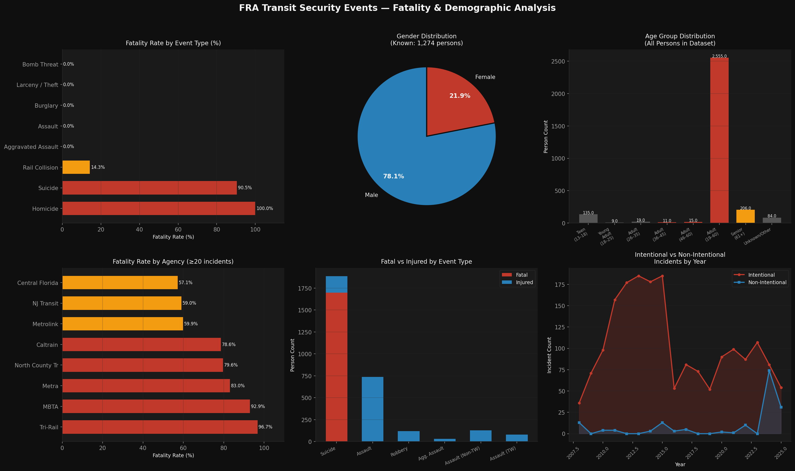
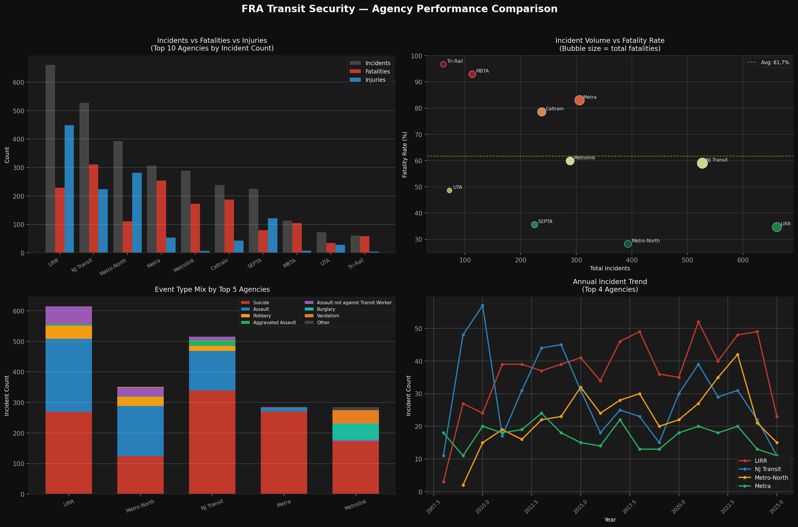

Excel · Python · Google Sheets · Data Analytics
Practical data work built from real operational problems and real datasets — not textbook exercises. Currently completing the Google Data Analytics Certificate on Coursera while building a portfolio of applied analysis work.
Completed Project
A full end-to-end data analysis project on 3,177 major security events recorded across 30 U.S. transit agencies from 2007 to 2025 — sourced from the Federal Railroad Administration's National Transit Database. Covers data cleaning, exploratory analysis, demographic parsing, agency comparison, and operational recommendations.
Key Findings
1,876 of 3,177 incidents were suicide events — accounting for 1,697 of 1,707 total fatalities. The 90.5% fatality rate per suicide incident makes it the overwhelming driver of mortality across all agencies.
686 assault incidents produced 736 injuries — with zero recorded fatalities. This creates a clear operational divide: suicide events require infrastructure intervention; assault events require operational response.
Tri-Rail (South Florida) recorded a 96.7% fatality rate. MBTA (Boston) 92.9%. Metra (Chicago) 83.0%. These agencies face suicide-corridor challenges where prevention infrastructure matters more than response capacity.
July recorded 306 incidents across all years — the highest of any month. August followed at 297. November was the lowest at 223. The summer surge held consistently across the 18-year dataset span.
Visualisations
Annual trend (2008–2025), event type distribution, top agencies by incident count, and monthly seasonality — all derived from the full 3,177-record dataset.

Fatality rate by event type, gender distribution (known persons), age group breakdown, agency fatality rates, fatal vs injured comparison by event type, and intentional vs non-intentional trend.

Grouped bar comparison of top agencies, incident volume vs fatality rate scatter plot, event type mix per agency, and annual trend lines for the top 4 agencies.

How It Was Done
Loaded the 3,177-row, 99-column CSV using Python pandas. Identified 10 data quality issues including missing Person List values (230 records), inconsistent age labelling, empty coordinates, and partial-year entries. Documented all issues in the Data Cleaning Log sheet of the Excel workbook.
The Person List column encodes demographic data as semicolon-delimited strings (e.g. "F Ped Walking Tracks Adult (19 to 60) M"). Wrote a custom Python function to parse outcome (F/I), gender (M/F), and age group from each string — producing 3,034 individual-level records for demographic analysis.
Built three multi-panel charts using matplotlib covering the full analytical scope: overview dashboard, demographics and fatality deep-dive, and agency comparison matrix. All charts use a consistent dark-background professional palette. Produced a 6-sheet Excel workbook and an 8-section formal report.
Deliverables
The complete analysis is available as a professional report and an Excel workbook. Both were produced from the real FRA dataset — all figures are reproducible.
In Progress
The FRA Transit Security project above is the first completed entry on this page. The roadmap below reflects what is actively being built — as certifications are completed and new datasets are tackled, this page will be filled in.
Currently completing the Google Data Analytics Certificate on Coursera — covering data cleaning, SQL, R basics, and the full analytical workflow from question to insight. Power BI is the next tool priority after the certificate. The goal is to document not just the tools but the thinking — what question was asked, why that approach was chosen, and what the data actually said.